Södermalm i tid och rum. Stockholm
Pelarbacken Ur Västra Södermalm, Arne Munthe, 1959
PelarbackenPå Södermalms avrättningsplats mötte marsken Torgils Knutsson år 1306 sitt öde, svekfullt utlämnad till sina fiender av den konung, som han troget tjänat. Marskens avrättning under nesliga former, som måste ha gjort ett skakande intryck på samtiden, skildras i Erikskrönikan på ett par torrt sakliga rader:
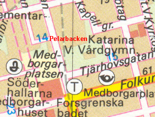
2000
»The leddon sunnan widh then stadh
ok giorde swa som konungen badh:
först tha growo the hans graff,
sidhan huggo the honom hwodit aff.»
Som en brottsling begrovs marsken på avrättningsplatsen i oinvigd jord, men efter någramånader överflyttades hans stoft till Gråbrödraklostrets kyrka. Vid den ursprungliga gravenrestes enligt Erikskrönikan två minnestecken
»Ouer then graff han innan laa
ther lotho the eth tiäld ouer slaa,
Ok lotho ther eth altare göra
hwo ther messo wille höra
Ther matten faa hona alla dagha;
-------
Eth korss saa man ther staa,
hwa till stadhin faar eller fraa.
The badho tess heller fore honom.»
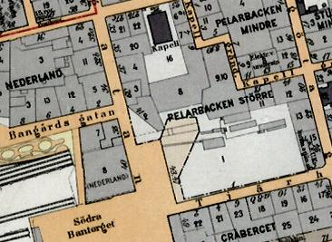
1922
Det ligger närmast till hands att av dessa uppgifter sluta sig till, att ett enkelt altare med ett kors uppsatts för att minna om marskens dödsplats men att något egentligt kapell icke funnits här vid tiden för krönikans skildring, antagligen början av 1320-talet. Något kapell på denna plats omtalas heller ingenstädes under hela århundradet.
Sedan minnet av den bakomliggande händelsen bleknat bort, kom altaret med korset att i stället fylla en uppgift som kultplats för de vägfarande, som där kunde be en bön för god reslycka eller tacka för lycklig hemkomst. I anslutning till denna kultplats uppfördes - man kan antaga i början av 1400-talet - det kapell, som sedan i stadsböckerna vid lokaliseringen av tomter på västra delen av malmen ofta omtalas som »Helga kors kapell i löt».
Kapellet, som tycks ha restaurerats eller byggts om på 1480-talet, låg alltså icke på själva Pelarbacken utan på östra sluttningen nedanför vid den tidigare omtalade s.k. löten (betesmark)."
Till Helga kors kapell på Södermalm knöts vid medeltidens slut en s.k. kalvarieanläggning efter mönster från vallfartsorterna utomlands. Bruket att uppresa minnesstenar, markerande de olika stationerna på Kristi väg till korsfästelseplatsen, hade uppkommit på kontinenten under början av 1400-talet. Efter att ursprungligen ha omfattat tolv stenar reducerades serien senare ofta till tre, samlade kring själva slutstationen, ett tänkt Golgata.
Tanken att stenarna rests till minne av Käpplingemorden är lika felaktig som teorien, att den bekanta gränsstenen vid Västerlånggatan ursprungligen ingått i en större kalvarieanläggning.
Käpplingemorden
Ett våldsdåd i Stockholm 1389 (eller 1392), skildrat i en handskrift från 1400-talets början. Enligt denna källa skall de tyska s.k. hättebröderna i staden ha gripit ett antal av de svenska borgarna, avrättat tre av dem inne i staden och senare fört de övriga till Käpplingen (nuv. Blasieholmen), där de nattetid tog livet av dem genom att antända det hus i vilket de hölls fångna. Någon oberoende källa finns inte utöver den nämnda berättelsen, som är tendentiöst antitysk och på flera punkter oklar. (Nationalencyklopedin)
Stenarna på det stockholmska kalvarieberget avbildade följande tre scener från Golgatavandringen:Jesus bär sitt kors, Jesus faller under korset och Den korsfäste med de båda sörjande Mariorna vid sidan. Ännu mot slutet av 1600-talet fanns anläggningen kvar i sitt ursprungliga skick. Stenen med bilden av den korsfäste och de två Mariorna stod sedan bäst emot klimatets påfrestningar och den klåfingriga pietetslösheten.
|
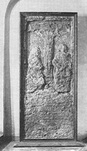 |
Ännu i början av 1900-talet stod denna sten kvar, ehuru i starkt medfaret skick, i närheten av Katarina kyrka. Genom att den sedan flyttades över till Nordiska museet, räddades ett intressant minnesmärke av den medeltida kulten på Södermalm från total förstörelse. |
{kind=link}
STOCKHOLMS GOLGATA
Kvarteret Pelarbacken
|
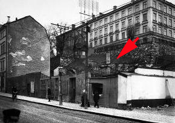 Kalvariestenen eller Käpplingestenen 1902. I bakgrunden Kapellgränd 8-10
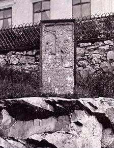 Kalvariestenen eller Käpplingestenen 1907. Götgatan 41, i bakgrunden Kapellgränd 6-10 |
Det medeltida Stockholms södra galgberg låg strategiskt placerat med utsikt över staden och alldeles intill landsvägen söderut - nuvarande Götgatan. Sänkan nedanför berget, där stadens avskrädeshög låg och liken efter de avrättade grävdes ned, heter i dag Björns Trädgård. Där leker nu barn i Björnsans parklek, ungdomarna samlas i Katarina fritidsgård och på bänkarna alldeles under det gamla galgberget strular det lokala A-laget. Här avrättades riksmarsken Torkel Knutsson för högförräderi den 10 februari 1306. Om honom finns nedtecknat att han på kung Birgers order fördes "sunnan om staden där bysens fä gick" och halshöggs med svärd.Torkel Knutsson var en av landets högsta ämbetsmän. Hans släktingar reste efter avrättningen ett högt kors på berget där han dött. Korset var länge det första som syntes av Stockholm för den som närmade sig söderifrån längs Göta landsväg. Så småningom byggdes också ett litet kapell, kallat Helga Kors kapell, strax intill för att hedra minnet av den döde marsken. Det förstördes troligen under de hårda striderna om Stockholm i början av 1500-talet. En gata som bär Torkel Knutssons namn finns i dag längre västerut på Söder. Men på hans tid hette området Åsön och var rena landsbygden. Torkel Knutssons enda anknytning till Söder var faktiskt att han avrättades där. Korset och kapellet gjorde att platsen började betraktas som helig. På väg till eller från staden, knäböjde man vid korset och bad om eller tackade för en lycklig resa. Under 1400-talet fick denna galgbacke en mer officiell religiös status som Stockholms kalvarieberg. Vid påsktid vandrade man i religiösa processioner från rådhuset på Stortorget upp till berget. Sträckan ansågs motsvara den som Jesus burit sitt kors till Golgata. |
Antingen 1496 eller 1511 - uppgifterna skiftar - restes tre kalvariestenar med motiv från Kristi lidande på berget. Folk kallade dem "pelare", därav namnet Pelarbacken som kvarteret fortfarande heter.Kalvarievandringarna var en katolsk tradition, som upphörde under reformationen. De tre stenarnas innebörd glömdes bort. De föll så småningom omkull och användes som grundstenar till de väderkvarnar som byggdes på berget sedan galgen flyttats. Två av stenarna försvann. Men den tredje räddades. År 1837 restes den upp och försågs med en järnplatta som berättade att detta var en minnessten rest av ångerfulla tyska borgare som botgöring för de så kallade Käpplingemorden 1389. Det var fel. Anledningen till misstaget var förmodligen att stenen bar en text på tyska som löd:
Bracht Got to Lof undt Ehre Versen är i dag helt oläslig. Men den sista kalvariestenen finns fortfarande. Den stod kvar på Pelarbacken till början av 1900-talet. Nu förvaras den på Medeltidsmuseum. Och på senare år har Katolska kyrkan på Söder åter tagit upp traditionen med kalvarievandringar till Pelarbacken vid påsktiden. |
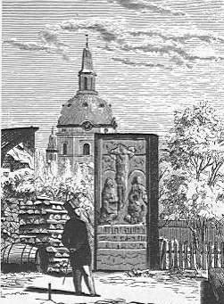 Ur Ny Illustrerad Tidning, 1870 |
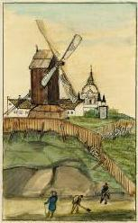
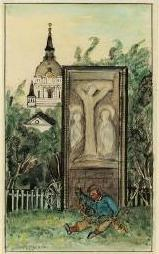
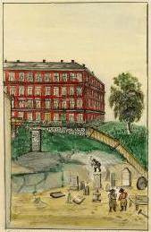 |
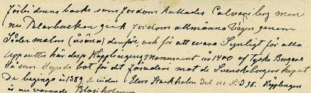 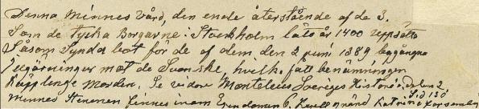 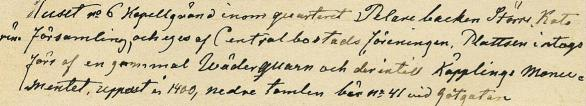
|